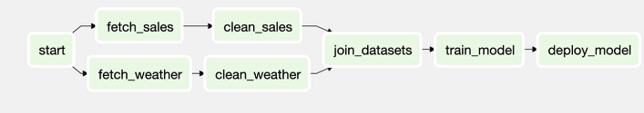
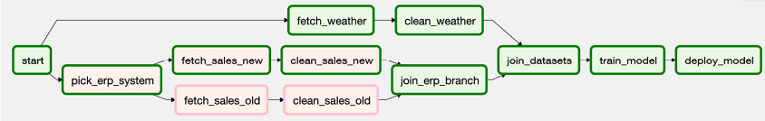

Note
Other than my experience and the documentation, the main resource behind this post and figures is the fantastic book: Data Pipelines with Apache. Airflow.
- Dependencies in airflow is specified using the right shift symbol
>>. It tells Airflow which tasks should be run first before running other tasks. - Basic Dependenices:
- Linear dependenies:
a >> b >> c. This means thatahas to run beforebwhich should run beforec. If any task fails, the downstream task won’t run and the errors are propagated to them from preceding tasks. They can only run after the errors are fixed for that interval. - Fan-in/Fan-out dependencies: 
- Fan-in: When 1 task is dependent on >= 2 tasks to run. join_datasets is fan-in task. Fan-in tasks can be specified as:
[clean_sales, clean_weather] >> join_datasets - Fan-out: When >= 2 tasks are dependent on 1 task to run. start is a fan-out task. Fan-out tasks can be specified as:
start >> [fetch_sales, fetch_weather] - This is how we can specify dependencies for the DAG in the above picture:
start >> [fetch_sales, fetch_weather] fetch_sales >> clean_sales fetch_weather >> clean_weather [clean_sales, clean_weather] >> join_datasets join_datasets >> train_model train_model >> deploy_model - Fan-in: When 1 task is dependent on >= 2 tasks to run. join_datasets is fan-in task. Fan-in tasks can be specified as:
- Linear dependenies:
- Branching:
- We can take care of conditional execution of code paths inside the task, i.e. inside Python script in the case of PythonOperator. Depending on some condition during execution, different code paths and logic will be followed. The main disadvantages of this approach is that 1) it is hard to figure out with code path is being executed on each run from tree/graph view unless we have logging enabled, 2) Adds more complexity to the code structure, 3) May not let us use specialized operators that abstract aways a lot of the boilerplate code such as PostgresOperator. For example, if we have fetch data from either CSV or SQL database depending on condition at execution.
- We can add
BrachPythonOperatortask that takes a Python callable to determine which tasks to execute next. The Python callable has to return the task_id of the task (or list of task_id) that Airflow should execute next. Example:
def _pick_erp_system(**context): if context["execution_date"] < ERP_SWITCH_DATE: return "fetch_sales_old" else: return "fetch_sales_new" pick_erp_system = BranchPythonOperator( task_id="pick_erp_system", python_callable=_pick_erp_system, ) start >> [pick_erp_system, fetch_weather] pick_erp_system >> [fetch_sales_old, fetch_sales_new] fetch_sales_old >> clean_sales_old fetch_sales_new >> clean_sales_new fetch_weather >> clean_weather [clean_sales_old, clean_sales_new, clean_weather] >> join_datasets join_datasets >> train_model train_model >> deploy_model- Since downstream tasks only get scheduled & executed if all thier downstream tasks finished successfully,
jon_datasetstask will never success because with the above dependency eitherclean_sales_oldorclean_sales_newwould execute BUT NOT BOTH. We can adjust this usingtrigger_ruleargument (default is"all_success"in the operatror by specifying"non_failed". This will run downstream task if all downstream tasks haven’t failed even if they never executed. Therefore, we can change trigger_rule forjoin_datasesttask. - A better approach is to create DummyOperator that does nothing but join both branches and become the upstream task before
join_datasetssuch as below: 
join_branch = DummyOperator( task_id="join_erp_branch", trigger_rule="none_failed" ) start >> [pick_erp_system, fetch_weather] pick_erp_system >> [fetch_sales_old, fetch_sales_new] fetch_sales_old >> clean_sales_old fetch_sales_new >> clean_sales_new [clean_sales_old, clean_sales_new] >> join_branch fetch_weather >> clean_weather [joen_erp_branch, clean_weather] >> join_datasets join_datasets >> train_model train_model >> deploy_model - Conditional tasks. Sometimes we only want to execute a task if a condition is true, otherwise, the task should be skipped. For example, if we want to only deploy the model on the most recent data and we don’t want
deploy_modelto always execute if we are doing backfilling -> Create a conditional upstream task that checks the condition and raise Exception if the condition is False sodeploy_modelwill be skipped.
from airflow.exceptions import AirflowSkipException
from airflow.operators.python import PythonOperator
def _latest_only(**context):
# execution_time is the first time in the schedule interval
# So following_schedule is the next execution_date
left_window = context["dag"].following_schedule(context["execution_date"])
right_window = context["dag"].following_schedule(left_window)
now = pendulum.now("utc")
# Since execution of DAG starts after last time point passed of the
# schedule interval ->
if not left_window < now <= right_window:
raise AirflowSkipException("Not the most recent run!")
latest_only = PythonOperator(task_id="latest_only", python_callable=_latest_only, dag=dag)
latest_only >> deplpy_model- Trigger rules: The triggering of Airflow tasks is controlled by the trigger rules which define the behavior of tasks and allow us to configure each task to respond to different situations.
- Be default, scheduler picks tasks ready to be executed when all its upstreams tasks were executed successfully and put it in the execute queue. The scheduler always checks downstream tasks if they are ready by checking all their downstream task completion state. Once there is a slot/worker, it will be executed. If any of the upstream tasks failed, it would have failed state and the upstream task won’t be scheduled and have state=upstream_failed. This is called progagation because the error is propagated from upstream to downstream tasks. This is the default trigger_rule which is all_success. If any of the down
- If any of the upstream task is skipped -> downstream task will be skipped as well (propagation).
- Trigger rules:
all_success: Triggers when all parent tasks have executed successfullyall_failed: Triggers when all parent tasks have failed or due to failure in their parentsall_done: Triggers when all parent tasks finished executing regardless of their state. Good to cleanup and shutdown resources regardless of the execution state of the workflowone_failed: Triggers when at least 1 parent task failed and doesn’t wait for other parent tasks to finishone_success: Triggers when at least 1 parent task succeeded and doesn’t wait for other parent tasks to finishnone_failed: Triggers if no parent task has failed but either completed successfully or skippednone_skipped: Triggers if no parent task has skipped but either completed successfully or faileddummy: Triggers regardless of the parent tasks state. Useful for testing